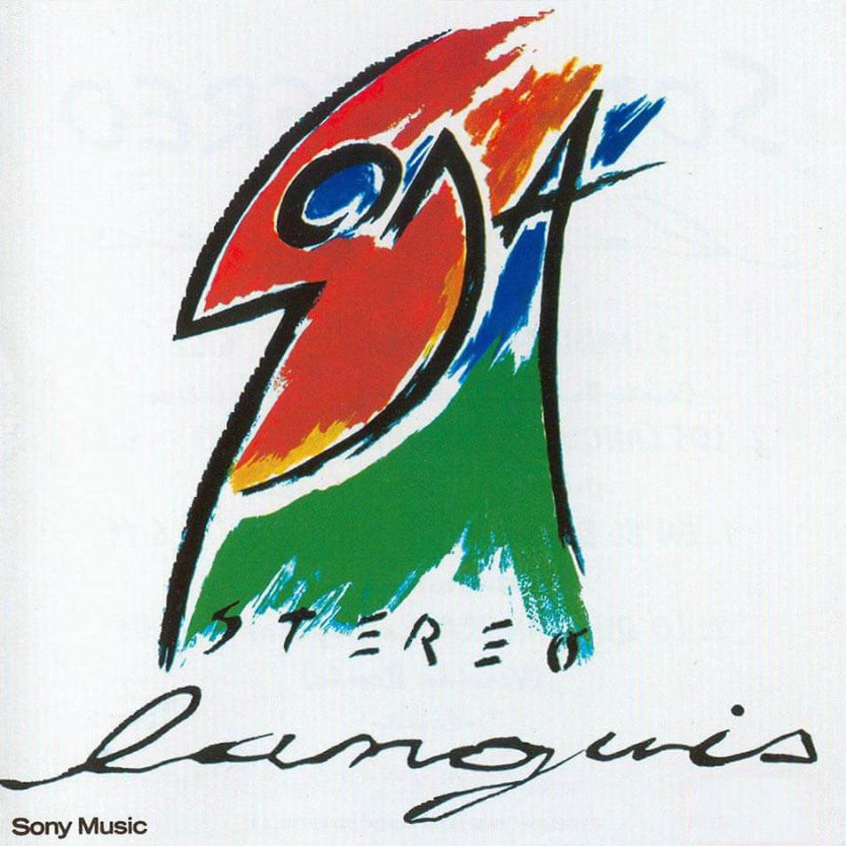

Soda Stereo

Editado el 27 de agosto de 1984 (CBS, luego Sony Music)
- Por qué no puedo ser del jet-set?
- Por qué no puedo ser del jet-set?
- Sobredosis de TV
- Te hacen falta vitaminas
- Trátame suavemente
- Dietético
- Tele-ka
- Ni un segundo
- Un misil en mi placard
- El tiempo es dinero
- Afrodisíacos
- Mi novia tiene bíceps
Producción artística: Federico Moura. Arreglado por Soda Stereo.
Técnicos: Tito Huber, Charlie López, Oscar Giménez. Estudio: CBS.
Músicos invitados: Daniel Melero (teclados), el Gonzo (saxo). Diseño:
Alfredo Lois, Fernanda Cohen. Fotos sobre interno: Zeta Bosio y
Leonardo Satragno
Nada Personal

Editado el 21 de noviembre de 1985 (CBS, luego Sony Music)
- Nada personal
- Si no fuera por
- Sobredosis de TV
- Cuando pase el temblor
- Danza rota
- El cuerpo del delito
- Juego de seducción
- Estoy azulado
- Observándonos -Satélites-
- Imágenes retro
- Ecos
Arreglado y producido por Soda Stereo. Grabado y mezclado en los estudios Moebio. Técnico de grabación: Mariano López. Músicos invitados: Fabián Von Quintiero (teclados) y El Gonzo (saxo). Diseño: Alfredo Lois. Arte: Fabián Di Matteo. Fotografías: Eduardo Marti.
Signos

Editado el 10 de noviembre de 1986 (CBS, luego Sony Music)
- Sin sobresaltos
- El rito
- Prófugos
- No existes
- Persiana americana
- En camino
- Signos
- Final caja negra
Producción artística: Soda Stereo. Arreglos generales: Gustavo, Zeta, Charly, Fabián. Técnico y producción de sonido: Mariano López. Músicos invitados: Fabián von Quintiero (teclados), Celsa Mel Gowland (coros), Richard Coleman (guitarra), Diego Urcola (trompeta), Pablo Rodríguez (saxo alto), Sebastián Schon (saxo tenor), Marcelo Ferreyra (trombón). Arreglos y dirección de vientos: Pollo Raffo. Arte y diseño: Alfredo Lois, Caito Lorenzo. Foto sobre interno: Claudio Fayngolz. Polaroids: Caito Lorenzo.
Ruido Blanco

Editado el 1 de noviembre de 1987 (CBS, luego Sony Music)
- Signos
- Juego de seducción
- Persiana americana
- Sobredosis de TV
- Estoy azulado *
- Final caja negra
- Cuando pase el temblor
- Vita-set: Te hacen falta vitaminas + Por qué no puedo ser del jet-set?
- Prófugos
- * originalmente sólo en cassette
Producción artística: Soda Stereo. Técnico de grabación: Adrián Taverna. Mezclado en Blue Wave Studio, Barbados. Ingeniero de mezcla y programación de Sinclavier: Glem Johansen. Técnico asistente de mezcla: Mario Breuer. Edición y corte: Bernie Grundman Mastering, Los Angeles. Ingeniero de edición y corte: Chriss Bellman. Invitados: Daniel Sais (teclados, coros), The Supremes (Monica Green, Melba Houston y Anita Robinson), Gustavo Aranguren (trompeta), Ramón Carranza (saxo), Pepe Vera (saxo tenor), Rodrigo Barboza (trombón). Arreglos de vientos: Pollo Raffo. Asistentes: Jorge Rearte, Luis Bianchi, Aldo Benítez, Hugo Altuve. Arte y diseño de tapa: Caito Lorenzo, Marcela Barreiro. Fotos: Raquel Cisneros, Mario Pergolini.
Doble Vida

Editado el 15 de septiembre de 1988 (CBS, luego Sony Music)
- Pic-nic en el 4º B
- En la ciudad de la furia
- Lo que sangra -La cúpula
- En el borde
- Languis
- Día común-doble vida
- Corazón delator
- El ritmo de tus ojos
- Terapia de amor intensiva
Producido por Carlos Alomar. Mezclado por Gustavo Cerati y Zeta Bosio. Arreglos generales: Soda Stereo, Daniel Sais y Carlos Alomar. Grabado y mezclado en Sorcerer Sound, NYC. Ingeniero: Andy Heermans. Ingeniero asistente: Shawna Stobie. Mastering por Bob Ludwig en Masterdisk, NYC. Invitados: Daniel Sais (teclados), Carlos Alomar (guitarra y voz, rap en “En el borde”), Lenny Pickett (saxo tenor), Chris Botti (trompeta). Arte y diseño de tapa: Alfredo Lois y Tite Barbuzza. Fotografías: Daniel Ackerman.
Languis

Editado en octubre de 1989 (CBS, luego Sony Music)
- Mundo de quimeras
- Los languis -nueva versíon 1989
- En el borde -versión remix
- Lo que sangra -La cúpula -versión remix
Arreglado y producido por Soda Stereo. Remixes de la Cupula y En el borde, producidos por Zeta Bosio. Grabado en estudios Ion y Panda. Mezclado en Panda en septiembre de 1989. Remixes de “En el borde” y “Lo que sangra -La cúpula” producidos por Zeta Bosio. Ingeniero de grabación y mezcla: Mariano López. Técnico adicional: Mario Breuer. Asistente de grabación y mezcla: Adrián Taverna. Músicos invitados: Tweety González, Andrea Alvarez, El Gonzo Palacios, Mavy Díaz, Chris Botti, Lenny Pickett, Daniel Sais y Carlos Alomar. Arte y diseño: Alfredo Lois y Silvina Mansilla. Tipografía. Mariana Mocchi y Alfredo Lois.
Canción Animal

Editado el 7 de agosto de 1990 (Sony Music)
- En el séptimo día
- Un millón de años luz
- Canción animal
- 1990
- Sueles dejarme solo
- De música ligera
- Hombre al agua
- Entre caníbales
- Té para tres
- Cae el sol
Producción artística: Gustavo Cerati & Zeta Bosio. Grabado y mezclado en Criteria Recording Studios, USA. Ingeniero de grabación y mezcla: Mariano López. Asistente de estudio: Roger Hughes. Asistente de grupo: Adrián Taverna. Mastering por Michael Fuller en Fullersound, USA. Musicos invitados: Tweety González, Andrea Álvarez, Daniel Melero. Aporte conceptual: Daniel Melero. Arreglos vocales en “En el séptimo día”, “Un millón de años luz”y “1990”: Pedro Aznar. Idea & diseño de tapa: Gustavo Cerati & Zeta Bosio. Arte: Alfredo Lois. Asistente: Vanesa Eckstem. Fotografías: Caito Lorenzo & Alfredo Lois.
Rex Mix

Editado el 25 de octubre de 1991 (Sony Music)
- Hombre al agua
- No existes *
- En camino -Viva la Patria mix
- No necesito verte -para saberlo
- No necesito verte -para saberlo -Krupa mix
- En camino -Veranek mix *
- No necesito verte -para saberlo -Candombe mix *
- * no incluídos en el vinilo original
Producción artística: Gustavo Cerati & Zeta Bosio. Registrados en vivo en el Teatro Gran Rex, Bs. As., el 9 de julio de 1991. Todos los temas grabados & mezclados en el estudio Supersónico. Ingeniero de grabación & mezcla: Mariano López, Eduardo Bergallo (remixes) & Adrian Taverna. Asistentes: Eduardo Iencenella, Martín Febro. Mastering por Michael Fuller, Fullersound, MIA, USA. Con la participación de Tweety González (teclados & guitarra acústica), Daniel Melero (teclados & coros, voz en “No necesito verte”), Andrea Alvarez (percusión & coro en “Hombre al agua”). Diseño de tapa: Gabriela Malerba, Alejandro Ros. Fotografías: Gabriela Malerba.
Dynamo

Editado el 1 de octubre de 1992 (Sony Music)
- Secuencia inicial
- Toma la ruta
- En remolinos
- Primavera 0
- Luna roja
- Sweet sahumerio
- Camaleón
- Ameba
- Nuestra fe
- Claroscuro
- Fue
- Texturas
Producción artística: Gustavo Cerati - Zeta Bosio, con la colaboración de Daniel Melero. Músicos invitados: Daniel Melero (sampler y sintetizador), Tweety González (sampler y asistencia de programación), Flavio Etcheto (trompeta), Sanjay Shadoriya (tabla, padanth voice), Eduardo Blacher (tambura) y Roberto Kuczer (sitar). Grabado y mezclado en estudios Supersónico. Ingeniero: Mariano López. Mezcla: Mariano López/Gustavo Cerati/Zeta Bosio. Asistente: Eduardo “Barakus” Iencenella. Mastering: Arnie Acosta en A&M Mastering Studios, Los Angeles, USA. Arte y diseño: Gabriela Malerba - Alejandro Ros. Fotografía: Daniel Ackerman.
Zona de Promesas

Editado el 1 de septiembre de 1993 (Sony Music)
- Zona de promesas
- Primavera 0 -bonzo mix
- En la ciudad de la furia -dance mix
- Nada personal -remix
- Luna roja -soul mix
- Cuando pase el temblor -oid mortales mix
- Mundo de quimeras
- No necesito verte (para saberlo) -krupa mix
- Sobredosis de TV -remix
- Lo que sangra (La cúpula) -versión remix
“En la ciudad de la furia” remixado por Ziggy P. en Dusseldorf.�“Cuando pase el temblor” remixado por Nicolás Guerrieri, Alejandro Guerrieri, Ezequiel Dero y Tuti Gianakis. Diseño e imágenes: Gabriela Malerba.
Sueño Stereo

Editado el 21 de junio de 1995 (BMG Ariola, luego Sony Music)
- Ella usó mi cabeza como un revolver
- Disco eterno
- Zoom
- Ojo de la tormenta
- Efecto doppler
- Paseando por Roma
- Pasos
- Angel eléctrico
- Crema de estrellas
- Planta
- X-Playo
- Moirè
Producción artística: Gustavo Cerati & Zeta Bosio. Grabado en los estudios Supersónico (Argentina) y Matrix (UK). Ingenieros de grabación: Eduardo Bergallo y Clive Goddard. Mezclado en Matrix. Ingeniero de mezcla: Clive Goddard. Segundo ingeniero: Eduardo Bergallo. Cuerdas grabadas en Moebio, por Laura Fonzo y Carlos Piriz. Asistentes: Eduardo “Barakus” Iencenella, Juan Maggi. Músicos invitados: Alejandro Terán (viola), Janos Morel (1er. violín), Mauricio Alves (2do. violín) y Pablo Flumetti (cello), Roy Málaga (piano rhodes en “Ojo de la tormenta” y “Crema de estrellas”), Flavio Etcheto (trompeta). Arreglos de cuerdas: Alejandro Terán. Arte y diseño: Gabriela Malerba-Alejandro Ros. Foto grupo: Cecilia Amenábar. Foto objetos: Fabris-Truscello.
Confort y musica para volar

Editado el 25 de septiembre de 1996 (BMG Ariola, luego Sony Music)
- Un misil en mi placard
- En la ciudad de la furia
- Entre caníbales
- Pasos
- Zoom
- Cuando pase el temblor
- Té para tres
- Ángel eléctrico
- Terapia de amor intensiva
- Disco eterno
- Ella usó mi cabeza como un revólver
- Paseando por Roma
- Génesis
- *: la edición original incluía los temas Sonoman (Cerati-Bosio-Alberti), Planeador (Cerati-Bosio-Alberti), Coral (Cerati) y Superstar (Cerati-Bosio-Alberti)
Grabado en vivo el 12 de marzo de 1996 en los estudios MTV, Miami Beach, Florida, USA. Gustavo Cerati: voz, guitarra acústica, elecrica & virtual. Zeta Bosio: bajo, guitarra acústica, coros. Charly Alberti: batería, percusión. Grabado en estudios Master (Chile), Supersónico (Buenos Aires), Matrix (Londres), y Artisan Estudio Móvil (Miami). Ingeniero de grabación, mezcla y mastering: Eduardo Bergallo.�Monitoreo: Adrián Taverna.�Asistentes de estudio: Eduardo Iencenella, Mariano Rodríguez, Lloyd Gardines y Joaquín García. Edición digital: Konstantinopla (Chile). Mastering y edición final: Mr. Master. Músicos invitados: Tweety Gonzalez (piano Rhodes, sampler & sintetizadores), Pedro Fainguersch (viola), Diego Fainguersch (cello), Ezequiel Fainguersch (fagot), Iain Baker (teclados en “Sonoman”) Participación especial de Andrea Etcheverri: voz en “En la ciudad de la furia”. Asistente de guitarras: Eduardo Iencenella. Asistente de bajos: Miguel Lara. Asistente de baterías: Horacio Maggi. Asistentes de teclados y samplers: Andy Ficicchia. Dibujos: Silvia Canosa. Fotos: Gabriela Malerba, Mauro Volpara. Diseño: Alejandro Ros.
El Ultimo Conciero A

Editado el 16 de diciembre de 1997 (BMG Ariola, luego Sony Music)
- En la ciudad de la furia
- El rito
- Hombre al agua
- En el séptimo día
- Canción animal
- Trátame suavemente
- Paseando por Roma
- Lo que sangra -La cúpula
- Zoom
- Signos
- Ella usó mi cabeza como un revólver
Mezclado por: Gustavo Cerati. Grabado en la gira “El último concierto” en México, Venezuela, Chile y Argentina, entre agosto y septiembre de 1997. Estudios móviles: Master, Procolor, Artisan y Gibraltar. Ingeniero de grabación: Mariano López. Asistentes de grabación: Mariano Rodríguez, Marcelo Mattioli, Joaquín García. Mezclado en: Estudio El Pie. Ingeniero mezcla: Eduardo Bergallo. Supervisión de mezcla: Adrián Taverna. Asistente de mezcla: Sebastián Loscicer. Mastering en USA: Chris Gehringer (Hit Factory USA) Músicos invitados: Teclados y programación: Tweety González. Los especialistas: Saxo tenor, viola, guitarra y percusión: Alejandro Terán. Flauta traversa, acordeón, saxo barítono, teclados y percusión: Axel Krygier. Músicos invitados en River: Andrea Álvarez, Richard Coleman, Daniel Sais, Fabián Quintiero. Fotos: Francisco Flores (concierto), Lois (video Ultimo Concierto), Fabris-Truscello (encendedores). Diseño: Ros.
El Ultimo Concierto

Editado el 16 de diciembre de 1997 (BMG Ariola, luego Sony Music)
- Disco eterno
- Planeador
- Luna roja
- Té para tres
- Cuando pase el temblor
- Claroscuro
- Persiana americana
- Un millón de años luz
- Primavera 0
- Cae el sol
- De música ligera
Mezclado por: Gustavo Cerati. Grabado en la gira “El último concierto” en México, Venezuela, Chile y Argentina, entre agosto y septiembre de 1997. Estudios móviles: Master, Procolor, Artisan y Gibraltar. Ingeniero de grabación: Mariano López. Asistentes de grabación: Mariano Rodríguez, Marcelo Mattioli, Joaquín García. Mezclado en: Estudio El Pie. Ingeniero mezcla: Eduardo Bergallo. Supervisión de mezcla: Adrián Taverna. Asistente de mezcla: Sebastián Loscicer. Mastering en USA: Chris Gehringer (Hit Factory USA) Músicos invitados: Teclados y programación: Tweety González. Los especialistas: Saxo tenor, viola, guitarra y percusión: Alejandro Terán. Flauta traversa, acordeón, saxo barítono, teclados y percusión: Axel Krygier. Músicos invitados en River: Andrea Álvarez, Richard Coleman, Daniel Sais, Fabián Quintiero. Fotos: Francisco Flores (concierto), Lois (video Ultimo Concierto), Fabris-Truscello (encendedores). Diseño: Ros.
Me veras volver 1

Editado el 18 de julio de 2008 (Sony Music)
- Juegos de seducción
- Tele-k
- Imágenes retro
- Texturas
- Hombre al agua
- En la ciudad de la furia
- Picnic en el 4ºB
- Zoom
- Cuando pase el temblor
- Final caja negra
- Corazón delator
- Signos
- Sobredosis de TV
- Danza rota
Mezclado por Gustavo Cerati. Grabado en la gira “Me verás volver” entre octubre y diciembre de 2007, en Buenos Aires, Miami, Bogotá, Lima. Estudio de grabación móvil: Z1.�Studio manager: Santiago Zambonini.�Asistentes: Sebastián Sánchez, Tomás Zambonini y Mariano Zambonini.�Soporte Protools: Ricardo Pegnotti y Diego Keller. Ingeniero de grabación: Eduardo Bergallo.�Asistente de grabación: Max Scenna.�Mezcla: Eduardo Bergallo en Revólver (Buenos Aires, Argentina), Excepto “Imágenes retro” y “Texturas”, mezclados por Mariano López en Unísono (Buenos Aires, Argentina).�Asistente de mezcla y ediciones en Revólver: Pablo Nelken.�Asistente de mezcla y ediciones en Unísono: Nicolás Pucci.�Supervisor de mezclas: Adrián Taverna. Mastering: Howie Weinberg (Masterdisk, NY). Músicos invitados: Tweety González, Leandro Fresco y Leo García. Fotos: Damián Benetucci y Germán Sáez.�Diseño: Rock Instrument Bureau.